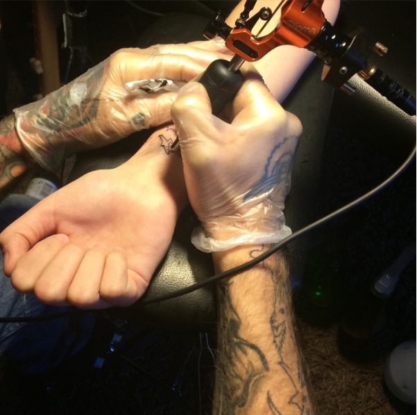
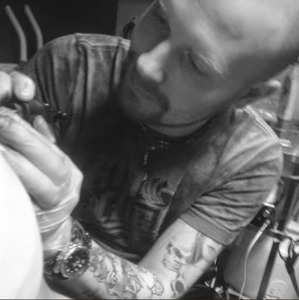

Ta hand om din tatuering
Det är viktigt att du tar hand om din tatuering, särskilt om den är nygjord. Det är individuellt hur lång tid det tar för en tatuering att läka men det brukar röra sig om 2-3 veckor. När den skorpa som bildats helt fallit av är din tatuering färdigläkt. Undvik att ta bort skorporna själv.
 När din tatuering är klar smörjer tatueraren in den med vaselin och täcker den med plast som du bör ha på i minst två timmar. När du sedan ska ta av den bör du följa dessa steg:
Ta av plasten
Tvätta händerna och ta sedan av plasten. Tvätta av tatueringen med ljummet vatten och exempelvis parfymfri Lactasyd. Badda tatueringen torr med en ren handduk som du endast kommer att använda vid torkning av din tatuering. Smörj in ett tunt lager med exempelvis salvan Bephanten.
Hantering av din tatuering under läketiden
Under tiden din tatuering läker bör du tvätta den på liknande sätt morgon och kväll samt smörja med Bepanthen 2-4 ggr om dagen. Blir skorpan tjock och hård har du smörjt in för lite. Hantera alltid din tatuering med rena händer. Undvik att basta, bada och sola då din tatuering kan blekna eller bli infekterad. Undvik även att klia.